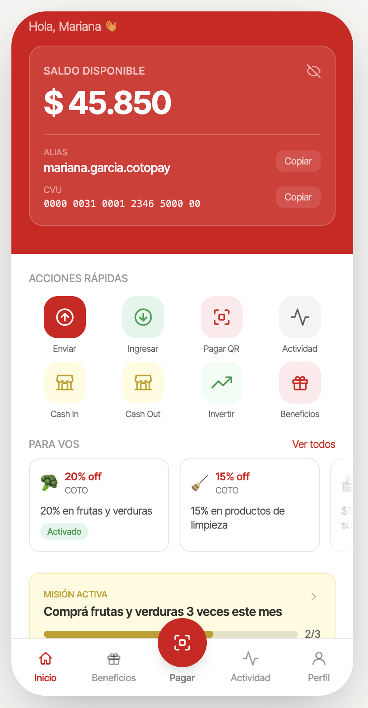

CotoPay
Business plan — pitch de venta de la idea de negocio a inversores
MT25 Estrategias de Negocios en Internet · Pitch de 15 minutos + 10 de preguntas
Mariana Fiorillo · Andres Franco · Diego Pouton · Luciano Suarez · Agustin Trucco · Emma Vignoles
Maestría en Gestión de Servicios Tecnológicos y de Telecomunicaciones — UdeSA
Probá el prototipo
en tu celular
Equipo
Mariana Fiorillo
Andres Franco
Diego Pouton
Luciano Suarez
Agustin Trucco
Emma Vignoles
Por qué existe COMUNIDAD COTO
"Aumentar los miembros de la comunidad prestando nuevos servicios, construir una relación directa con los clientes que supere la venta en la góndola."
Esta frase vuelve casi igual en el cierre — cierra el círculo del pitch.
Esto no es un problema de acceso a pago digital
- COTO ya tiene alianzas comerciales activas y vigentes: Mercado Pago (QR desde ~agosto 2020, con descuentos) y MODO (alianza renovada mayo 2024, reintegros 20-30% con tope $10.000–25.000 por banco).
Según BBVA (22/1/2025), las alianzas de MODO con Coto y Día duplicaron el volumen de MODO en supermercados durante 2024.
Qué pierde COTO al procesar ese pago vía terceros
- Datos de primera parte incompletos — el vínculo pago↔identidad↔comportamiento lo construye y posee el tercero.
- Fidelización cedida a terceros — el cliente asocia el beneficio a "MP" o "MODO", no a COTO, aunque el gasto pase en un local COTO y la promoción le aporta 100% COTO.
- Flexibilidad sobre el calendario promocional del propio checkout.
- Dependencia de reglas ajenas — cualquier cambio de MP/MODO/bancos impacta el checkout de COTO sin que COTO lo decida.
Comunidad COTO / TCI — historial identificado de compra. Candidato natural al onboarding de CotoPay.
Compra sin identificarse — oportunidad de conversión y captura de datos que hoy se pierde por completo.
Pregunta abierta para Q&A: no hay fuente que confirme quién financia hoy los reintegros de MP/MODO en sucursales COTO (retomado en Modelo financiero y en el Anexo).
No competimos como "banco digital más chico" — competimos por conocer mejor al cliente
COTO no tiene licencia bancaria ni track record fintech, y esa pelea ya la tienen ganada Mercado Pago y Ualá. La wallet COTO compite como la wallet que mejor conoce el historial de compra real de supermercado del cliente.
Según historial real de compra (categoría, frecuencia, ticket) — no un % genérico por rubro como Cuenta DNI, ni dependiente de Meli+ como MP.
Vive dentro del mismo instrumento de pago, sin tarjeta aparte — ningún competidor integra "beneficio" y "pago" en el mismo QR con reglas fijas y visibles.
Ampliar la Comunidad al e-commerce.
Tarjetas, micropréstamos, cuenta en dólares, cuenta remunerada.
5 pantallas núcleo
- Onboarding simplificado, sin costo de apertura.
- Home con beneficios calculados sobre historial de compra.
- Pagar en caja — QR propio, interoperable bajo el estándar BCRA de Transferencias 3.0: un tap paga, aplica el beneficio y suma puntos.
- Beneficios con reglas fijas y visibles por cliente.
- Recompra rápida, integrada con el catálogo de Coto Digital.
QR interoperable (Transferencias 3.0) · Procesamiento de tarjetas propio · Plataforma vía partnership con PSP/BaaS existente · Historial de compra como capa de personalización
- Sin costo de apertura de cuenta
- Sin comisión por transacción al usuario
- Sin suscripción mensual
- Sin permanencia mínima
- Los beneficios son financiados por COTO y sus proveedores — el cliente paga menos, no más

Piloto → rollout nacional en 3 años, atado a la captura de SAM
La cobertura física crece más rápido que la captura de GMV porque no hay exclusividad posible frente a MP/MODO — migrar un hábito de pago instalado toma tiempo aunque la sucursal ya esté habilitada.
Seleccionar y contratar el proveedor que procesa los pagos y provee el CVU/alias — sin construir infraestructura bancaria propia
Integrar el QR de CotoPay con las terminales POS existentes en las 15-20 sucursales piloto (prueba de latencia <800ms)
Encuadre legal bajo la regulación BCRA para billeteras digitales (TCI ya opera en este marco)
Adquisición de los primeros 1.000-5.000 usuarios desde la base de Coto Digital (menor CAC, mayor adopción digital previa)
KPIs de salida de Fase 0: activación, retención a 30d, NPS inicial, % de transacciones migradas de MP/MODO
Qué tipo de defensibilidad tiene — y qué tipo no
No es un network effect clásico de dos lados — COTO es el único vendedor, no hay lógica de marketplace. Sí hay un network effect de datos, pero débil y unilateral — se marca explícitamente como moat débil, no como pilar del argumento. La defensibilidad real se apoya en tres cosas:
COTO ya tiene relación de compra física, no arranca de cero — a Ualá le costó 8 años y capital de fondos globales llegar a 7,5M de clientes.
Historial y beneficios personalizados generan costo de cambio creciente para el cliente.
153 sucursales y una base que ya visita esas sucursales con frecuencia.
La amenaza, dicha en voz alta antes de que la pregunten: multi-tenanting
MP y MODO ya son medios aceptados y activamente promocionados en las sucursales de COTO hoy. Nada impide que el cliente los siga usando en la misma caja, y por el mandato de interoperabilidad QR del BCRA, COTO tampoco podría forzar exclusividad aunque quisiera.
La wallet COTO no reemplaza a MP/MODO, compite por una porción del share of wallet — exactamente lo que refleja la curva conservadora del SOM (5%→15%→25%).
Cómo se monetiza — 4 palancas, priorizadas
| Palanca | Aplicación al caso COTO | Peso |
|---|---|---|
| Frecuencia | Palanca primaria: la wallet empuja a comprar más seguido en COTO en vez de repartir el gasto entre cadenas | Alta |
| Basket size | Cross-sell vía recompra en Coto Digital — sin dato de elasticidad propio, se deja cualitativo | Media |
| Take rate | No aplica — no es modelo de marketplace | No aplica |
| Ad load / retail media | Venta de espacios promocionales a proveedores/CPG — recién viable desde la Fase 3 | Baja, complementaria |
Modelo resultante: retención / margen retail incremental, no comisión ni suscripción al cliente final.
Barreras de entrada — con el límite dicho explícito
Brand + embedding + distribución, sin exclusividad posible en el propio checkout.
No hay barrera estructural fuerte — lo que compra tiempo es ser first mover entre las tres cadenas grandes, más el embedding acumulado.
No existe ningún dato público de clientes, ticket promedio, frecuencia de compra ni facturación de COTO. Gran parte de este embudo son supuestos propios del equipo, marcados paso a paso — se prioriza mostrar la lógica de cada salto sobre la precisión del número final.
TAM — ventas totales de supermercados en Argentina
INDEC, promediando los 5 meses de 2025 disponibles y anualizando. No incluye diciembre (mes pico) ni ajusta inflación intra-año — cifra direccional.
SAM — el gasto que ya se paga hoy con billeteras/medios digitales
Se define como la porción del gasto de COTO que ya se paga hoy con billeteras/medios digitales — el segmento listo para migrar, no el que hay que convertir del efectivo primero.
- Carrefour + Cencosud + COTO ≈50% del TAM (fuente de agregador, no verificada contra el informe original).
- Sin dato para diferenciar por cadena, supuesto de split parejo 1/3 → COTO ≈ARS 4,1 billones/año.
- Se aplica el 11,1% de "otros medios" que INDEC midió a nivel nacional en supermercados (nov. 2024). Proyección del equipo: 35-40% para 2026, siguiendo la curva de adopción de QR en Argentina.
SAM — "esto es, literalmente, la cuantificación del problema: dinero que ya eligió pagar digital en COTO, pero hoy no vía COTO."
SOM — captura conservadora, atada al roadmap de sucursales
| Año | Cobertura de sucursales | % del SAM capturado | GMV vía wallet COTO |
|---|---|---|---|
| 1 | ~59% (CABA) | 5% | ≈ARS 22.900 millones/año |
| 2 | ~90% (+GBA) | 15% | ≈ARS 68.750 millones/año |
| 3 | 100% (+resto del país) | 25% | ≈ARS 114.600 millones/año |
Este GMV no equivale a ingreso incremental para COTO — se resuelve en Modelo financiero.
Chequeo de plausibilidad: no hay bottom-up independiente posible por falta de dato de tráfico por sucursal — se dice así explícitamente en vez de forzar una segunda cuenta disfrazada de fuente independiente.
No es una apuesta sobre tecnología emergente — es sustitución de medio de pago ya en curso y medible
BCRA: pagos con QR interoperable interanual; débito cayendo 16,8% — sustitución activa del medio de pago, no solo crecimiento nuevo.
- Global Payments Report 2026: billeteras digitales pasaron de 34% a 43% del valor pagado en comercio físico en Argentina en un año; 84% de los argentinos usa QR para pagar con el celular — el más alto de Latinoamérica.
- INDEC: "otros medios" (incluye billeteras) ya es 11,1% de las ventas de supermercados (nov. 2024). Proyección: 35-40% para 2026 siguiendo la curva de adopción de QR — el sector ya muestra tracción, sin que exista todavía una wallet propia de COTO.
Wallet embebida en la app YPF para pagar combustible — arranca desde la base de clientes habituales de la estación de servicio, no desde cero. Modelo idéntico al que propone CotoPay.
Wallet embebida en cadenas farmacéuticas — captura la recurrencia de compra y el historial de salud del cliente para personalizar beneficios. Mismo patrón: relación comercial preexistente como plataforma de lanzamiento.
La única cancha con ventaja defendible: el historial de compra real
| Competidor | Límite frente a la propuesta de wallet COTO |
|---|---|
| Mercado Pago | Ecosistema financiero completo, pero sin visibilidad del historial de compra de supermercado del cliente |
| MODO | Fricción cero (ya está "adentro" del banco), pero es promoción de marca del tercero, sin personalización por historial |
| Cuenta DNI | Descuento genérico por rubro, sin alianza confirmada con COTO, sin personalización individual |
| Ualá | Competidor indirecto — licencia bancaria, 8 años de scoring, ~7,5M de clientes — pero sin relación con la compra recurrente de supermercado |
El pitch no se apoya en "aceptar pagos digitales" — eso ya lo resuelven MP y MODO hoy dentro del propio checkout de COTO. La única cancha con ventaja potencial y defendible es el historial de compra real.
No existe ningún dato financiero público de COTO. Todo lo que sigue es una cadena de supuestos del equipo con su lógica al lado — el objetivo es mostrar una estructura defendible, no una proyección precisa.
CAPEX y OPEX — supuestos de trabajo, no cotizaciones
CAPEX inicial (Fase 0-1) — plataforma vía partnership con un PSP/BaaS existente. Ningún componente cotizado con proveedor real todavía.
- Equipo de 8-12 personas para Fase 0-1 (sin costo salarial estimado).
- Incentivos de lanzamiento equivalentes a 3-5% del GMV objetivo de cada fase — por analogía de orden de magnitud con los reintegros de la competencia (10-25% MP, 20-30% MODO).
- A partir de Fase 2, el OPEX sube USD 100.000 adicionales por período (mayor escala operativa y cobertura geográfica).
El GMV no es ingreso incremental por sí mismo
Se fija 20% (extremo conservador del rango 20-30%) como fracción de GMV genuinamente incremental, con margen bruto retail de 22% sobre ese incremental — ambos supuestos del equipo, ver Anexo.
No se lidera con un número de VAN/ROI optimista construido sobre esta cadena de supuestos. Se presenta el número puntual junto con la lógica de por qué es conservador, citando el Anexo de supuestos.
La fracción de GMV genuinamente incremental sigue siendo el supuesto menos sólido de todo el modelo — pesa más que el riesgo tecnológico o de costo de plataforma.
Promedio por transacción vía Transferencias 3.0 — sin IVA. Menor al costo actual de MP/MODO para COTO.
Conversión de clientes de Mercado Pago a CotoPay genera ahorro en comisiones que fondea parcialmente el OPEX de la fase siguiente.
Horizonte de evaluación. Número a definir con modelo actualizado — se presenta la lógica, no una cifra puntual sin respaldo.
"La oportunidad no es vender más pagos digitales — eso ya lo resuelven MP y MODO dentro del propio checkout de COTO. La oportunidad es que COTO deje de financiar, con su propio piso de venta, la construcción del activo de datos y fidelización de un competidor de facto — y empiece a construir el suyo."
Quedan 10 minutos y hay preguntas que nosotros mismos nos hicimos primero — arranquemos por esas si quieren.
5 cifras sin fuente confirmada — documentadas para que el panel las vea
| # | Gap | Cifra adoptada | Fuente | Nivel de respaldo |
|---|---|---|---|---|
| 1 | Sucursales COTO | 153 | Parcial (suma verificable de la propia página de COTO) | Medio-alto |
| 2 | Fracción de GMV incremental | 20% (extremo conservador de 20-30%) | Ninguna — supuesto del equipo | Bajo, con lógica de negocio explícita (multi-tenanting) |
| 3 | Financiamiento de reintegros MP/MODO | COTO cofinancia ~60%, tasa combinada de reintegro 20% | Ninguna — supuesto del equipo | El más bajo de los cinco |
| 4 | CAPEX inicial | USD 500.000 | Ninguna — supuesto del equipo | Bajo, sin sesgo direccional razonado |
| 5 | Margen bruto retail | 22% | Ninguna específica de AR/COTO — conocimiento general de industria | Bajo — junto con el punto 3, el de mayor incertidumbre |
Ninguno de los cinco se presenta como un hecho verificado en el documento — se marcan como supuestos explícitos del equipo, consistente con la regla de este TP de nunca afirmar un dato de mercado o cifra sin fuente citada.
Cuando el flywheel gira: dos palancas de largo plazo
- TCI (Tarjeta COTO Identificada) ya existe como unidad financiera del holding
- Historial de compra de CotoPay = señal crediticia superior para consumo en supermercado
- Captive use: el préstamo se gasta dentro de COTO → riesgo bajo, ticket alto
- Repago descontado del siguiente pago en caja
No requiere licencia bancaria nueva
- De segmentación RFM (Fase 1) a modelos de elasticidad por cliente, categoría y visita
- Predicción de sustitución de ítem cuando falta stock
- Retail media: marcas proveedoras pagan por targeting sobre historial real de góndola
- Detección de churn anticipada por cambios en patrón de compra
Solo COTO tiene el dato de góndola ítem a ítem — MP/MODO/Ualá solo ven el movimiento de dinero
Estos evolutivos no son el scope de este pitch — son la razón por la que el dato que generamos hoy vale mucho más que la comisión que ahorramos
Tres riesgos que el modelo reconoce explícitamente
MP y MODO pueden bajar su costo para COTO en respuesta al lanzamiento de CotoPay — reduciendo el diferencial de comisión antes de que CotoPay alcance masa crítica. El argumento de ahorro en comisiones se debilita si la competencia ajusta condiciones.
COTO no tiene experiencia operando un instrumento financiero regulado. El riesgo no es solo tecnológico — es de compliance, atención financiera y gestión de reclamos. La curva de aprendizaje puede ser costosa y lenta.
La competencia puede no reaccionar simétricamente sino cambiar las reglas del juego: nuevas alianzas, condiciones más agresivas para otros retailers, o un escenario competitivo dinámico donde el baseline del mercado cambia antes de que CotoPay consolide posición.